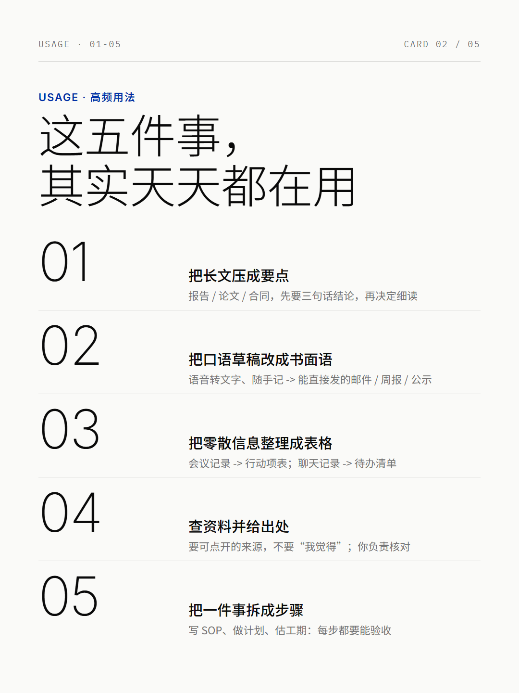
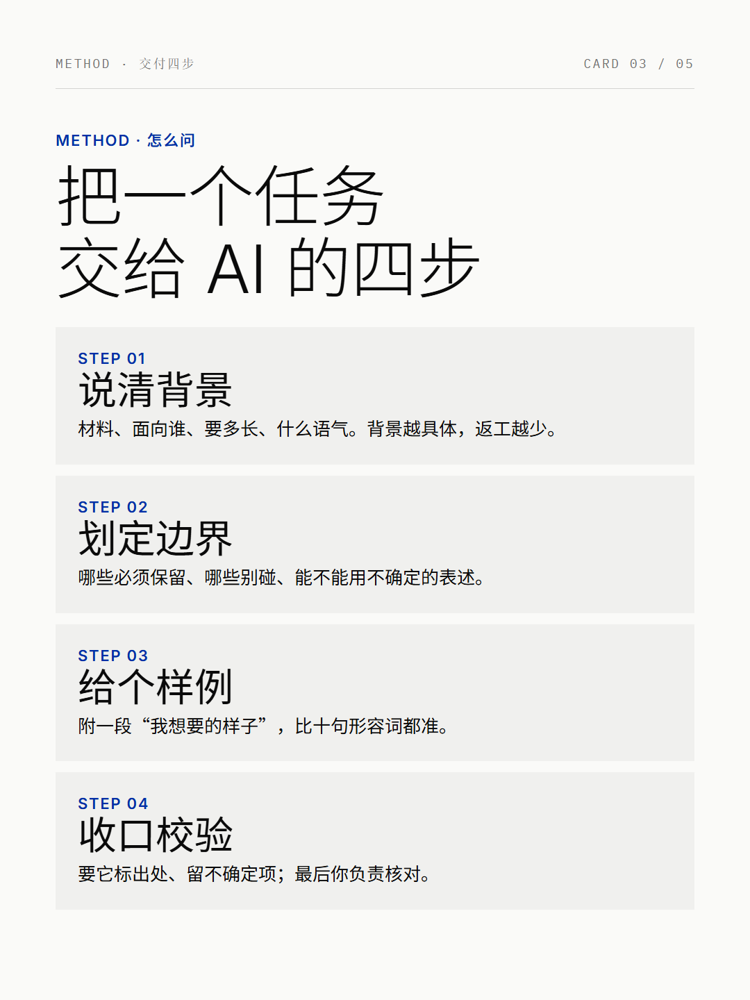
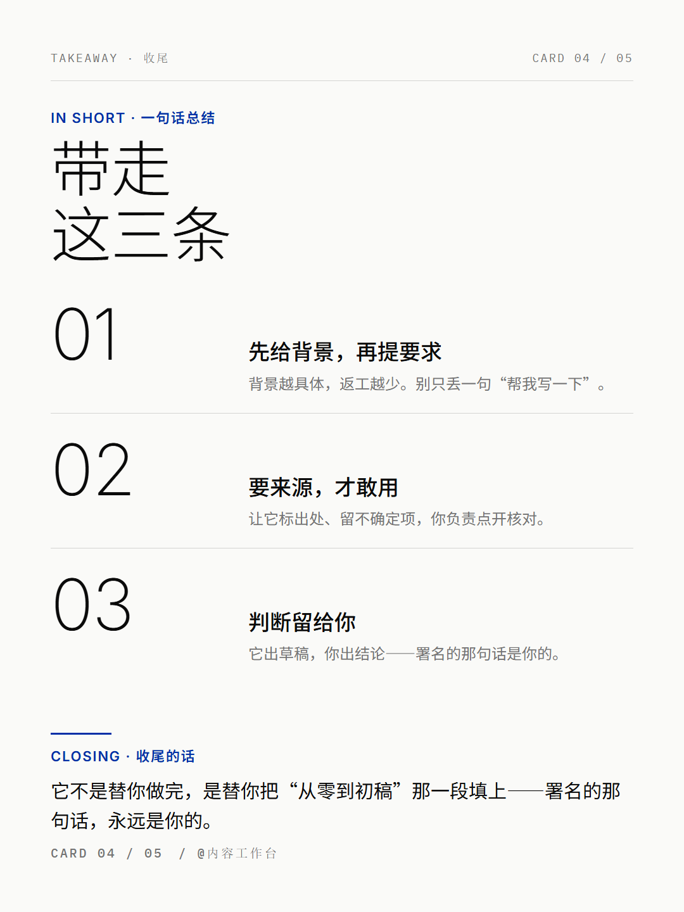

这个痛点，是不是你
痛点卡 · 自媒体-04 小红书知识卡片 / 社媒海报
所属材料：M7（design-aesthetic-top-30-skills 30 个设计 skill 榜）
所在领域：领域二 · 自媒体（公众号爆文 / 小红书）
提取依据：子Agent执行规范.md 第〇节「痛点先行」+ 〇补「痛点提取细则」
〇、材料定位说明（与派单口述的差异，如实记录）
派单口述为"看《100个WorkBuddy+应用案例合集》案例13"。核对原始材料后，该手册的案例 12/13 分别是"PPT 自动生成""商业演示文稿"，与本案例无关；本案例的真实来源是 案例清单.md 标注的 M7—— 原文（M7 · #24 Xiaohongshu Card）「生成小红书风格知识卡片、社媒海报和内容封面」。 本卡以 案例清单.md 的 M7 来源为准（另见同榜 #07 Banner Design、#29 Bold Design 同属"海报/图片生成"类）。
一、痛点原句（引用手册原文）
原文①（M7 · #24 Xiaohongshu Card，分类"海报/图片生成"）
「生成小红书风格知识卡片、社媒海报和内容封面」；产出类型标注为「生图 / HTML 卡片」。
原文②（M7 · #07 Banner Design）
「做广告横幅、活动 banner、课程封面和促销主视觉」。
原文③（案例清单.md 自媒体-04 补全句）
「文章写好了，还得做封面和内页卡片；不会设计软件，用模板又一眼撞车，做 3 张图 1 小时。」
二、痛点主体（谁）
内容已经写好、但卡在"出图"这一步的自媒体运营者 / 知识博主——文案能写、选题会找，一到配图就交不出产品。
三、旧做法的代价
- 做 3 张图 1 小时（原文③）：一篇文章要"1 张封面 + 2-3 张内页知识卡"，纯手工拼图+配字，一小时就这么没了，还未必好看。
- 不会设计软件（原文③）：PS/AI 学不会，Canva 只会套模板；版式、字重、留白这些"看着简单"的事，业余做出来就是不对。
- 用模板又一眼撞车（原文③）：全网爆款模板被用烂了，发出去读者一眼认得出"又是那个模板"，涨粉效果打折。
- 症结不在"没有图"，在"没有一套能反复用的版式系统"：每次从零拼图，所以每次都要 1 小时，且每次风格都不统一。
四、想要的目标（做到什么程度算"解决好"）
把一篇已写好的内容，一次性产出"一组风格统一、版式专业、尺寸合规"的知识卡片。 可验收：
- ① 一组卡片：1 张封面 + 2-3 张内容卡，同一套视觉系统（不是每张一个风格）；
- ② 尺寸精确命中平台规范：小红书 3:4 = 1080×1440（可直发，不被裁）；
- ③ 版式经得起看：标题层级清楚、无溢出/不触边、手机缩略图仍可辨；
- ④ 不是模板撞车款：有明确的品类路由（内容属于哪类小红书品类 → 用哪套版式配方）。
五、【补全】为什么值得解决 + 目标导向 vs 工具理性
- 【补全】目标导向的真相：运营者真正要的是"这篇内容能带着一组好图发出去、被看进去"，而不是"学会做一个设计"。"会不会 PS"是手段，"图能不能帮内容涨粉"才是目标。
- 【补全】工具理性陷阱：最容易掉进去的做法是——去研究"用哪个设计工具""哪个模板站好看""字体该装哪个"，把时间花在工具上，而不是内容上。手册 M7 把这件事归成 skill（#24 "生成…知识卡片"），正是要把"设计手段"交给 AI，人只管内容。
- 【补全】本案例的复刻价值：把"生成小红书风格知识卡片"这句能力描述，做实为一套可复现的出图流程——定品类路由（哪类内容用哪套版式）→ 选视觉系统（Swiss / 电子杂志）→ 由 skill 的种子模板出真实 PNG → 插桩核验尺寸与版式。"风格统一 + 尺寸合规"这两件事，恰恰是业余拼图最容易漏、也最影响观感的。
- 【补全】为什么值得解决：这是一个高频重复动作——每发一篇内容就要出一组图。"重复的版式劳动"交给 AI，"内容讲什么、给谁看"留给人，正是该被 agent 接手的活。
六、价值归类
✅ 目标导向——解决的是"内容已写好、如何快速产出合规且有设计感的一组配图"这一内容交付问题； ❌ 不是"我想学个设计工具所以找个东西练手"式的工具理性。
七、跨章回扣
- 直接回扣
案例清单.md领域二开篇：原文「把重复性的工作交给 AI，把创意和判断留给自己」——"出图 + 排版 + 尺寸"是重复劳动（交给 AI）；"这篇讲什么、封面用什么钩子"是创意判断（留给人）。 - 与 自媒体-03 是一条流水线的上下游：03 把周报改写成小红书文案并给出"配图建议"（shot list），04 负责把建议落实成一套真实的卡片 PNG（见
案例自媒体-03…/最终产物/配图建议.md）。 - 与 自媒体-05 共享同一篇内容：04 出小红书 3:4 卡组，05 出公众号封面成对——同一内容、两种平台的尺寸与构图分头处理（正是
platform-specs.md强调的"逐张独立刷、不同注意力预算"）。
AI 是怎么解决的
产物 · 在线预览




